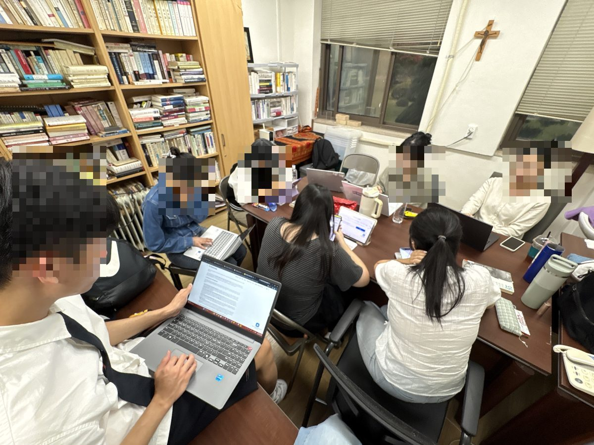

경험을 설명 가능한 형태로 만들기
학부생 진로 포트폴리오 소모임 「오지탐험대」를 지도하며
- 기간2026년 –
- 대상연세대학교 학부생 소모임
- 형식격주 저녁 모임, 연구실
- 주제진로 포트폴리오와 이력서 — 자기 경험을 설명 가능한 형태로 만들기
- 역할지도

왜 포트폴리오인가
국제개발협력 분야로 가고 싶다는 학생들이 가장 먼저 묻는 것은 어떤 스펙이 필요하냐는 것입니다. 그런데 이 분야의 채용은 자격증 목록으로 판정되지 않습니다. 어떤 문제를 붙들었고, 그 문제를 어떻게 다뤘으며, 무엇이 남았는지를 설명할 수 있는 사람을 찾습니다. 그래서 모임의 목표를 스펙 쌓기가 아니라 이미 가진 경험을 설명 가능한 형태로 만드는 일로 잡았습니다.
모임의 방식
제가 강의하는 시간은 짧게 두고, 대부분을 각자의 문서를 놓고 서로 읽어 주는 데 씁니다. 한 사람의 이력서를 함께 보면서 "이 문장에서 네가 한 일이 뭔지 모르겠다"고 말해 주는 일을 반복합니다. 본인은 다 안다고 생각하는 경험이 남에게는 전달되지 않는다는 것을 스스로 발견하는 것이 이 모임의 핵심입니다.
지도하는 입장에서 가장 조심하는 것은 제 경로를 정답처럼 말하지 않는 것입니다. 제 이력은 방송작가에서 봉사단원, 기관 실무자를 거쳐 연구자로 온 경로인데, 이것을 따라 하라고 권할 수는 없습니다.
남은 물음
이 모임의 성과를 무엇으로 볼 것인지는 저도 정하지 못했습니다. 취업 결과로 보면 표본이 적고 시차가 크며, 무엇보다 학생의 삶을 성과지표로 환산하는 일이 됩니다. 지금으로서는 각자의 포트폴리오가 학기 초와 학기 말에 얼마나 달라졌는지를 본인이 비교해 보는 정도로 두고 있습니다. 이 물음은 제가 사업 평가에서 늘 마주치는 물음과 같은 모양입니다.